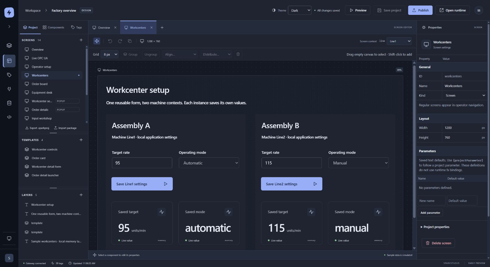
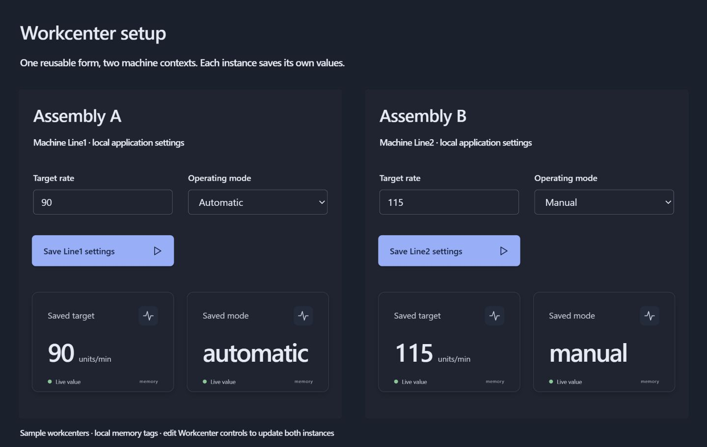
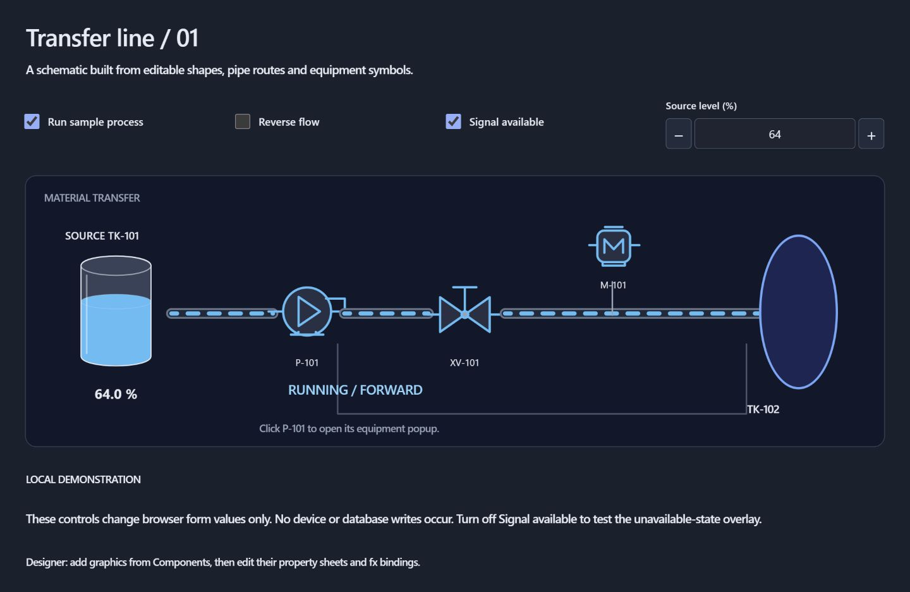
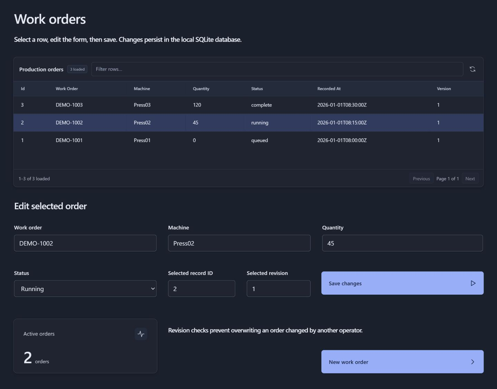
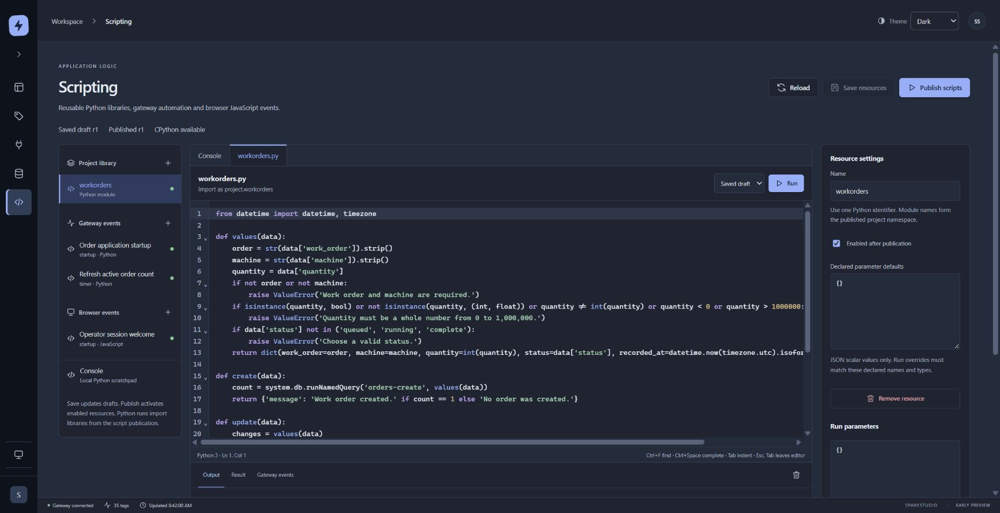

01 / LAYOUT
Place it. Make it work.
Drag and resize controls on a fixed canvas. Bind values, collect operator input, and open a popup without rebuilding your screen around a layout engine.
Build screens with a WYSIWYG editor. Connect your data. Make the application your operation needs—with a browser designer and a gateway you run.

Place controls on a fixed canvas. Organize screens and templates, adjust their properties, and keep the tools you need within reach.

Publish a separate operator application with inputs, actions and reusable equipment forms.

Build process views with editable pipes, shapes, and pump, valve and motor symbols.

Bring query results into tables and forms so operators can select a work order, update its details and save changes.

Write reusable Python libraries, organize gateway events and add browser interactions in one scripting workspace.
Design in
your browser.
Run on
your infrastructure.
Keep control of
your application.
Build with a canvas, a palette, and controls that stay where you put them. Drag, resize, and connect each part of your application.
Drag and resize controls on a fixed canvas. Bind values, collect operator input, and open a popup without rebuilding your screen around a layout engine.
Reuse a parameterized form across equipment. Repeat cards for saved rows, with independent inputs and actions for each instance.
Try changes in Designer Preview. Save, then publish the approved application to a separate operator view. Draft screen edits can stay drafts.
Connect values, captions, colors and visibility to tags, form inputs and typed parameters with the property sheet’s fx controls.
Combine pipes and equipment symbols with tanks, level indicators, numeric displays and progress bars to show what matters.
Use query-backed tables, lists and trees. Configure columns, filter and sort loaded rows, and map selections into operator forms.
Write Python component events and reusable gateway logic. Send messages to operator tabs, or use JavaScript for browser interactions.
Open parameterized popups with their own form state. Use declared screen and session values to carry context through the application.
Keep screens, queries, scripts and assets together in independent projects. Move applications between installations with .sparkproj packages.
Bring OPC UA and mapped PLC values into a typed tag model, use indirection to follow the selected asset, and write event logic in modern Python.
OPC UA clientDiscover, browse, read, and subscribe. Secured subscriptions have been verified in local Windows testing.
Industrial devices · Windows preview.12Connect Modbus TCP, Allen Bradley EtherNet/IP, Siemens S7 and Beckhoff ADS. Browse saved point maps, read values and review scalar writes. Physical controller qualification is pending; see the setup guide for supported profiles.
SQLite and SQL ServerBuild query-backed forms with parameterized reads and updates. SQLite application workflows are tested locally; live SQL Server validation is pending.
Python 3 on the gatewayUse form inputs, context, and the growing system.* API in authored button events.
cell = "Cell04"# Read the selected cell’s rate.
values = system.tag.readBlocking([
"[default]Cells/{cell}/Rate"
])
# Return a result to the application.
result = {
"cell": parameters["cell"],
"rate": values[0].value
}{ "cell": "Cell04", "rate": 142 }The browser designer, gateway and Python runtime in one package. Start locally, then build your application.
Download for Windows Latest preview: 0.2.0-preview.16 · Windows x64 · Unsigned previewThe gateway, browser designer and Python runtime for your own infrastructure. Keep your projects in a persistent volume.
Example Compose Container preview: 0.2.0-preview.16-docker.1 · Linux AMD64 / ARM64 Local HTTPS setup · Port 8443 · Administrator setup from the container CLI